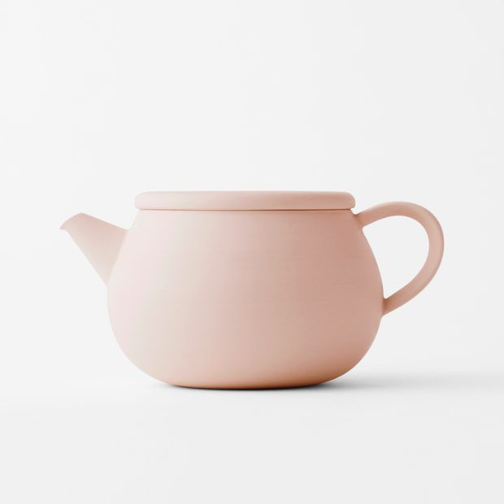
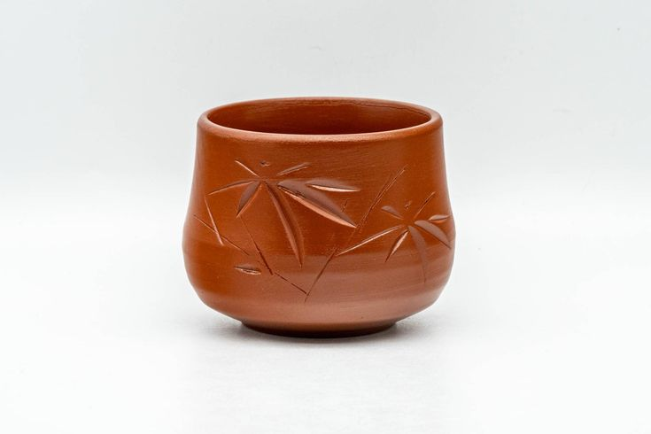

otonarisan
常滑焼/Tokonamiware
愛知県の知多半島にある常滑市を中心に焼かれる焼き物です
常滑焼の最大の特徴は、知多半島で採れる鉄分を多く含んだ陶土を使用することです
また、基本的に釉薬を掛けない素焼きの陶器として製作されることも特徴の一つです




歴史/History
起源は平安末期にまでさかのぼります
古来より大瓶・大壼などの日用雑 器が有名です
桃山時代には茶道具、江戸時代には、この地で産出する鉄分の多い陶土の性質を巧みに生か した朱泥焼や白泥焼、火色焼を作り、今日の基礎が築かれました